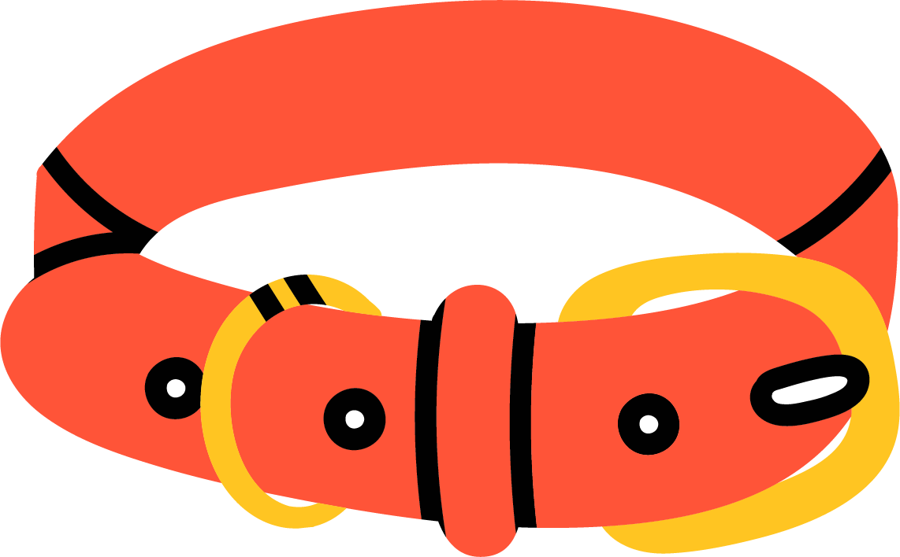

Adventures
Below you will find a few of the many significant events that define Mabel’s life.
Puppy Teeth
Mabel, a lively bulldog pup, wreaked havoc with her relentless teething. Each day, she turned the Falls' home into a battlefield. Baseboards bore her tiny teeth marks, and molding became her chew toy. No chair leg stood unscathed; she ravaged them all with gusto. Even couch pillows weren't spared as she targeted their corners. And as for her toys? They met their demise within minutes.
Despite her destructive tendencies, the Fall family couldn't help but adore their mischievous pup. With her wrinkled face and wagging tail, Mabel brought joy to their lives, even if it meant replacing a few chewed-up belongings along the way.
The Locked Car
My mom was running errands with Mabel when she saw one of her old coworkers on the street. My mom got out of the car for what she thought was going to be a quick “hi, hello! how are you”. My mom and her old friend talked for a minute, had a goodbye hug and then my moms friend left and drove off. My mom went to open the driver door and get back in her car, but the car door was locked.
She thought this was funny as she didn’t lock the car when she got out. To her horror, she looked in the window and saw Mabel sitting on the car key, having accidentally locked the car with her backside. Not only that, my moms phone was on the car seat too. Thankfully, the trunk of this car doesn’t automatically lock, and my mom was able to crawl through the back of the car to the drivers seat. Mabel got bored during this whole ordeal, and fell asleep on the car seat, sleeping all the way until they got home.
Silly Bandz
Being Mabel's owner was always an adventure, and sometimes, it led us down unexpected paths. Mabel, our English Bulldog, was a treasure, but her penchant for mischief knew no bounds. Her favorite pastime? Ingesting anything she could find. One day, Mabel fell seriously ill. Rushed to the vet, we discovered the cause: a jumble of foreign objects clogging her intestines. It was a mix of socks, doll shoes, pens, and even Sillybandz -